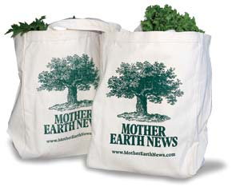

It’s not unusual for consumers to reconsider a familiar product and wonder “Was this a bad idea?” Hazardous products may face a recall, declining sales, or in some cases, an outright ban. It's happened to a wide range of consumer products including dangerous toys and medications with harmful side effects. Environmentally damaging products that have been phased out include leaded gasoline, many pesticides and ozone-depleting chlorofluorocarbons (CFCs).
In recent months, several initiatives have banned some familiar, but wasteful, products because there are now greener options available. Here's a rundown of which products are being banned and the better options that are replacing them.
Where: San Francisco and Leaf Rapids, Canada, recently banned plastic grocery bags made from petroleum.
Why: The bags are hard to recycle, they're made from petroleum, and on the coast they often blow into the water, where they're an eyesore, and hazardous to marine life if ingested.
Complications: San Francisco hopes stores will stock biodegradable plastic bags, but they are more expensive than petroleum-based plastic (6 to 10 cents each, instead of 1 cent each). Paper bags may not be an eco-friendly alternative. They consume forest resources (if not made from recycled paper) and making them creates pollution.
Best Alternatives: There’s a clear consensus on this issue: Reusable bags are the best. Consider using a whole set of canvas bags for your grocery shopping. (We like to use our own Mother Earth News canvas bags. You can find them by visiting www.MotherEarthShopping.com.)
Where: Australia will phase out the incandescent light bulb by 2010, and Ontario by 2012. Similiar initiatives are proposed for California, New Jersey and the European Union.
Why: Incandescent bulbs consume about three times as much electricity as compact-fluorescent light bulbs, so they create much more carbon dioxide pollution.
Complications: Compact fluores cents do have a downside: They contain tiny amounts of mercury, so instead of throwing them out, they should be recycled or taken to your city’s hazardous waste collection point.
Best Alternatives: Despite their mercury content, compact fluores cents are still considered much more eco-friendly than incandescent bulbs by the U.S. Environmental Protection Agency and Energy Star programs, and they're perhaps the easiest way to cut your electric bills and reduce your carbon footprint. Light emitting diodes (LEDs) are another good, emerging alternative. They contain no mercury, are already more efficient than incandescent bulbs, and are expected to become much more efficient over the next few years.
Where: 100 cities in the United States have banned some form of polystyrene (or Styrofoam) food containers including San Francisco, Oakland, Calif., and Portland, Ore.
Why: They're hard to recycle, not biodegradable and made from petroleum. They blow into waterways where, like plastic bags, they're an eyesore and dangerous to marine life. Hazardous chemicals are used to make them.
Complications: The best alternatives aren't clear. Paper or cardboard containers are better than Styrofoam, but still consume forest resources (if not made from recycled paper), and cause pollution during their manufacture.
Best Alternatives: Recycled paper or cardboard containers, or aluminum foil, which can be recycled.
Find a wide variety of green products and more information to help you evaluate alternatives.
Co-op America, National Green Pages
www.coopamerica.org/pubs/greenpages/
Consumer Reports, Greener Choices
|
 MOTHER EARTH NEWS It can be fun and easy to ditch plastic grocery bags in favor of reusable canvas bags. It's an easy way to make a positive difference for the environment. |
|
|